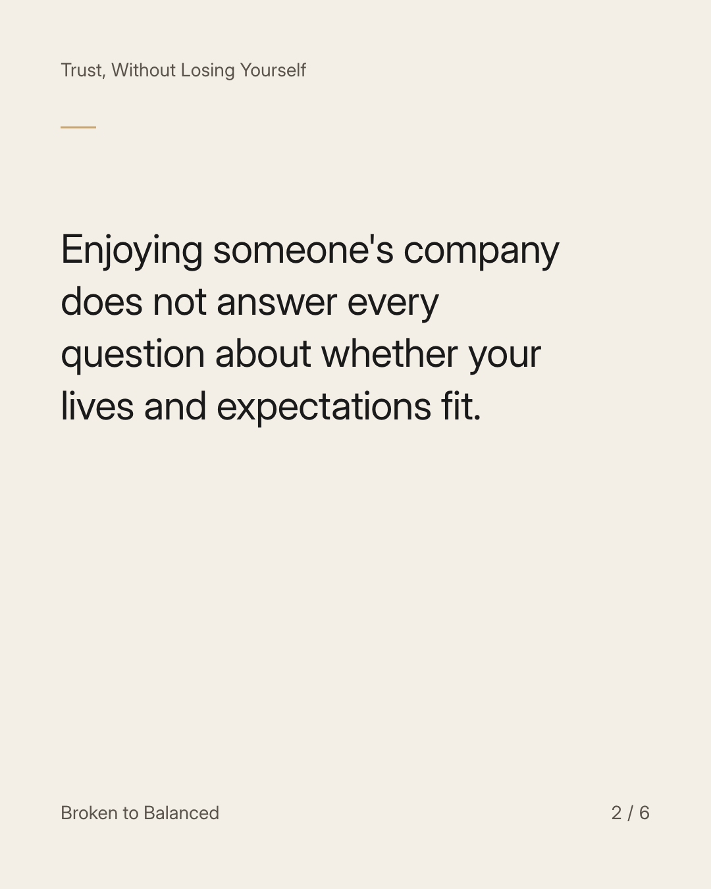
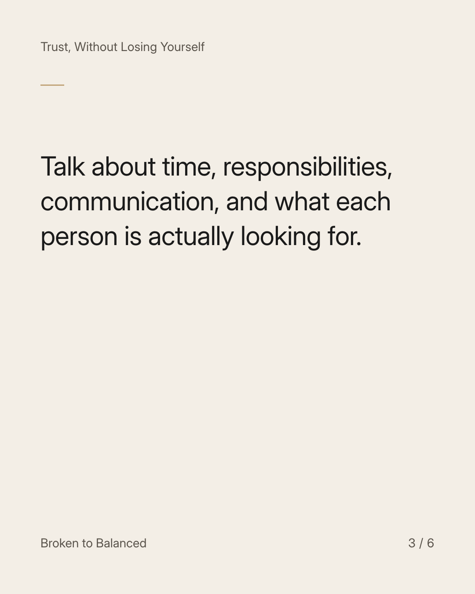
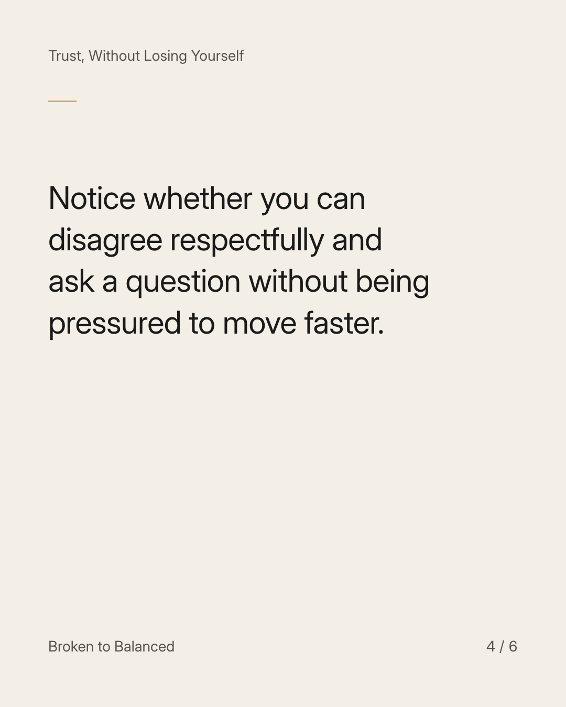
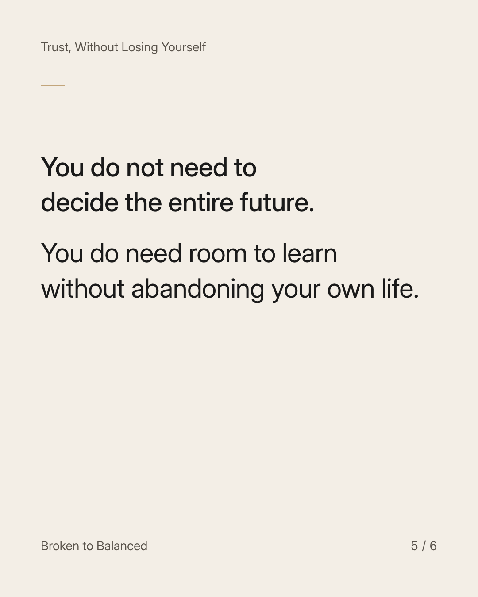
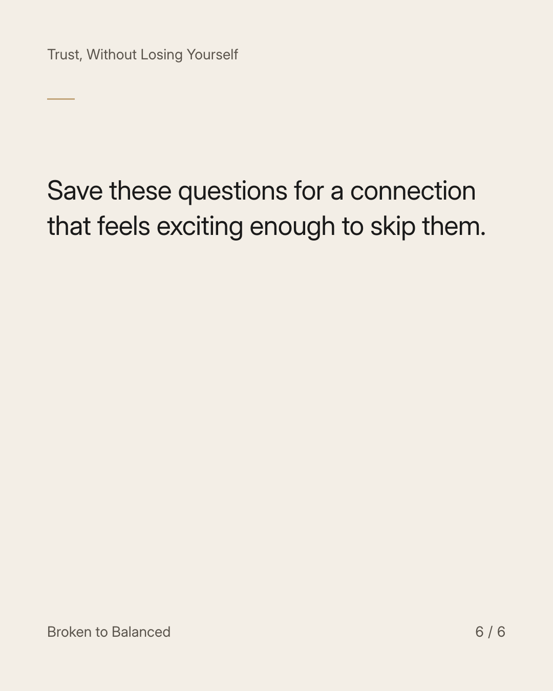

Exact text and accessibility text
A strong connection still needs ordinary questions.
Slide 1 of 6. A strong connection still needs ordinary questions.


Exact text and accessibility text
Enjoying someone's company does not answer every question about whether your lives and expectations fit.
Slide 2 of 6. Enjoying someone's company does not answer every question about whether your lives and expectations fit.


Exact text and accessibility text
Talk about time, responsibilities, communication, and what each person is actually looking for.
Slide 3 of 6. Talk about time, responsibilities, communication, and what each person is actually looking for.


Exact text and accessibility text
Notice whether you can disagree respectfully and ask a question without being pressured to move faster.
Slide 4 of 6. Notice whether you can disagree respectfully and ask a question without being pressured to move faster.


Exact text and accessibility text
You do not need to decide the entire future. You do need room to learn without abandoning your own life.
Slide 5 of 6. You do not need to decide the entire future. You do need room to learn without abandoning your own life.


Exact text and accessibility text
Save these questions for a connection that feels exciting enough to skip them.
Slide 6 of 6. Save these questions for a connection that feels exciting enough to skip them.
Exact caption
Plain-text fallback: select and copy the caption.